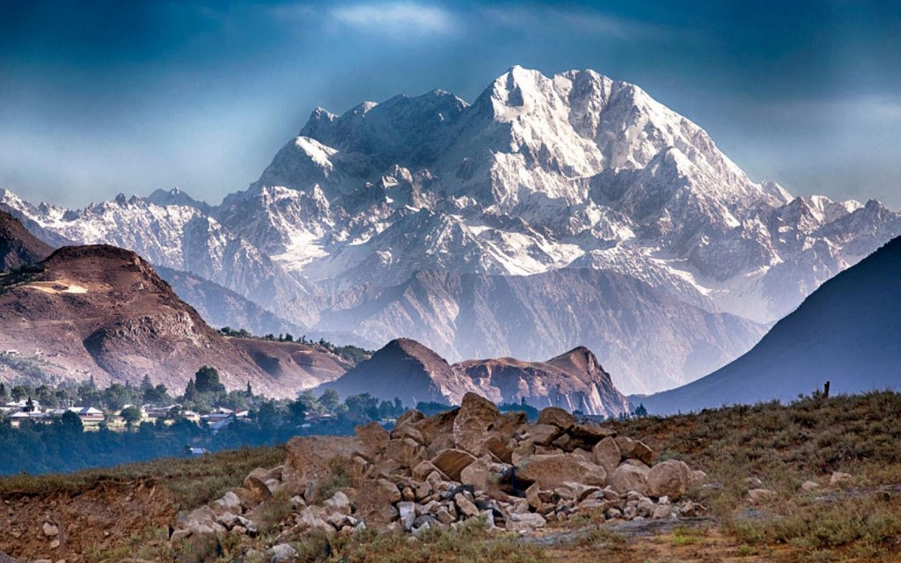

Mountain Ranges in Pakistan
By Faizan Ahmad Khan / September 13, 2023
Northern Pakistan is blessed with the world’s majestic, densest ranges of highest and most precipitous
mountains in the world. The continental collision of the Indo-Australian tectonic platelet to the
existence of the most spectacular diversified peaks in the whole Asian continent.
The convergence of three major mountain ranges: Himalaya, Karakoram (second highest in the world), and
Hindukush has been a unique geographical landmark on earth. These are located at the confluence of the
Indus and Gilgit rivers near Jaglot – a small town 40 km south of Gilgit city.
Pakistan has more than a hundred peaks that are above 7,000 meters. Out of the world’s 14 highest peaks,
five are found to be in Pakistan (8,600 meters to 28,000 feet). They are a famous sight of attraction
for geologists and climbers from all over the world.

Himalayas – Largest Mountain Range in Pakistan
The world’s largest mountain range across the globe; the Himalayas home to Mount Everest is situated in
Kashmir valley and Northern Pakistan to the south and east of Indus River, and is dominated by Nanga
Parbat massif.
It runs through five international borders: Nepal, Bhutan, China, India with the western part of the
range located in the Astore District in Gilgit Baltistan, Pakistan. It is a popular lure for climbers
and the most visited tourist spot in Pakistan offering a lot of thrilling excitements and
adventures.
Closer to it can be found the famous, Deosai National Park. Surrounded by rolling hills, it is an alpine
plateau of exceptional beauty and ecological value. Summer is the best season for overnight camping,
fishing, and hiking.
Hindu Kush
The Hindu kush mountain range situated in the north-west of Pakistan rises south-west of Pamirs. The
eastern part of it straddles Afghanistan and Pakistan. The range can also be seen in Ghizar, Yasin
Valley, and Ishkoman in the northern areas of Pakistan.
The mountain was discovered in 1830. Climbers have been attempting to scale it since 1927. The first
successful attempt was made in 1950 by a Norwegian team with a few Pakistani climbers.
The highest peak, Tirich Mir which is (7,690 meters to 25,230 feet) is in Chitral. The second highest
peak, Noshaq (7492 meters to 24,580 feet) is at the Pak-Afghan border.
The first region of the mountain extends from the Wakhjir pass separating Hunza from Wakhan. The second
region locates beyond Dorah pass in Afghanistan. The third region locates in Pakistan and extends from
Swat to Kohistan areas. On the East, it is separated from the Karakoram by the mighty Indus River.
Nearby areas of the mountain have multiple entertaining opportunities including trekking and jeep
safari.
Karakoram
The Karakoram mountain range is the second highest in the world. A part of it extends from the Himalayan
range. It nestles between the three borders: India (Ladakh), China (Xinjiang), and Pakistan
(Gilgit-Baltistan).
It is the continental divide of southern Asia. The Karakoram has more than 60 peaks above 7000 meters.
The range is bounded on the northeast by the edge of the Tibetan Plateau, and on the north by the Pamir
Mountains.
A European team first attempted to climb the Karakoram in 1856. A member of this team, Thomas
Montgomerie, named this peak K2 as it is in the second-order of the range.
The other four peaks are named:
1. K1 (Masherbrum)
2. K3 (Broad Peak)
3. K4 (Gasherbrum II)
4. K5 (Gasherbrum I)
The Siachen Glacier at 70 km and the Biafo Glacier at 63 km from the mountain are ranked as the world’s
second and third longest glaciers outside the polar regions.
Rivers from the south flow to the Arabian Sea, while the rivers from the north flow to the Yellow Sea.
It is one of the most liked mountain ranges among hikers and mountaineers due to its scenery, lakes, and
surroundings.
K2 is also known as the ‘Savage Mountain’ due to its difficult ascend.
Nanga Parbat
Known as the ‘Killer Mountain’, also called ‘Diamir’, is the ninth highest in the world. The name is
derived from the Sanskrit words ‘nanga parvata’, meaning ‘naked mountain’. Diamir is a local name for
the peak which means ‘king of the mountains.’
It is situated at the western side of the Himalayas, in the northern areas of Pakistan, south of the
Indus River in the Astore District. The mountain’s north side drops about 23,000 feet to the Indus
River.
The first attempt to ascend the glacier was by a British Alpine climber named, Albert F. Mummery in 1895
but he died in his attempt.
At least 30 more climbers (mostly German-led) have perished in their attempt because of the severe
weather conditions and frequent avalanches. Finally, Austrian climber Hermann Buhl was successful to
reach the top in 1953.
Safed Koh Mountain Range
The white mountain range is situated at the Pakistan-Afghanistan border. Mount Sikaram is the highest
and most famous mountain found in the region. In Pashto, it is known as ‘Spin Ghar’.
Since the mountain is close to the Khyber Pass as well as Shandur Top, it has the highest polo ground in
the world, often visited by enthusiastic climbers and trekkers. Shandur Polo Festival is held every year
in the Hindu Kush Mountains.
Kirthar
Kirthar range situated in Sindh and Balochistan, it extends southward 300km from the Mula River
(Balochistan) to Cape Monze (west of Karachi) to the Arabian Sea. The mountains are drained by the Gaj
River and Hub River.
The maximum altitude of the Kirthar range called ‘Barugh Hill’, makes it Sindh’s highest peak (7056 feet
above sea level). The range lies northwest of the Gorakh Hill Station, known as the ‘Murree of Sindh’. A
popular destination for camping, stargazing, trekking, and bird watching at the height of 5,688
feet.
Salt Mountain Range
The salt range is a series of hills and low mountains, extending from the south of Potohar Plateau to
the north of the Jhelum river located in the northern part of Punjab. The range is named for the
extensive richest salt deposits in the field.
Its history goes back to Precambrian age and ranges up to more than 1,600 feet in thickness.
It also has great mines of Khewra, Kalabagh, and Warcha yielding vast supplies of salt. Mined from
ancient times, it contains some quantity of coal, gypsum, and other minerals.
Ethnic groups of the locality are Pandzhabt, Dzhat, and Aran; who speak Indian languages (mainly
Lakhrda).
The Salt Range has a high level of biodiversity, home to a number of wildlife sanctuaries and wetland
areas: (ChumbiSurla, Jahlar Lake, Sodhi, Khabekki Lake, and KundalRakh). Chinji National Park, Simli
Reserved Forest, and Noorpur Reserved Forest are also located there.
Sulaiman Mountain Range
The Sulaiman Mountains are situated in the northern region of Balochistan and the Zabul province of
Afghanistan.
Present at the border of the Indian Subcontinent, Iranian Plateau and west of the Indus River. It is
Pakistan’s fourth major mountain range. If you are adventurous do visit deserts in Pakistan.
The mountain is, however, quite different in character from the Northern Mountains as it is less
precipitous with medium elevations.
Conclusion
The extraordinary living conditions in these regions have given rise to remarkable arts, culture, and
traditions in the Pakistani lifestyle. The ecological conditions and remoteness of the mountains also
support the unique biodiversity of a huge variety of plants and animal species such as snow leopards,
brown bears, and mountain goats.
The remarkable geostrategic importance that these mountain regions have given to Pakistan is boundless.
Pakistan’s major rivers and their tributaries originate in these mountain regions and present an
enormous potential for tourism and adventurous sports.